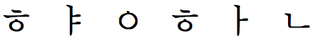

Updated Tue 21 Oct 2014 • tags korean, scriptnotes
This page provides information about the characteristics of the script used to write Korean. It is not intended to be exhaustively scientific – merely to give a basic idea of the essential features of the script. Number of characters is based on the simplest list of exemplarCharacters in CLDR.
세계를 향한 대화, 유니코드로 하십시오. 제10회 유니코드 국제 회의가 1997년 3월 10일부터 12일까지 독일의 마인즈에서 열립니다. 지금 등록하십시오. 이 회의에서는 업계 전반의 전문가들이 함께 모여 다음과 같은 분야를 다룹니다. - 인터넷과 유니코드, 국제화와 지역화, 운영 체제와 응용 프로그램에서 유니코드의 구현, 글꼴, 문자 배열, 다국어 컴퓨팅.
| Script name | Hangul |
|---|---|
| Script type | syllabic |
| Number of characters (CLDR) | 2350 |
| Case distinction | no |
| Combining characters | 0 |
| Multiple combining characters | no |
| Context-based positioning | no |
| Contextual shaping | no |
| Cursive script | no |
| Many more glyphs than characters? | no |
| Text direction | ltr / tb-rl |
| Baseline | low |
| Space is word separator | yes |
| Wraps at | character/space |
| Justification | word |
| Native digits? | no |
Click on the orange text in the features list (right column) to see examples and notes. Click on highlighted text in the Sample section to see the characters. Click on the vertical blue bar, bottom right, to change font settings.
It is possible to store hangul as a sequence of non-syllabic Unicode characters, which are then combined for display. This is because the Korean syllabic glyph is composed of easily distinguishable phonetic components (called jamos), grouped into a square. For example,
is composed of the following jamos:

This is not common, however. The overwhelming majority of Korean is stored as syllabic units, as shown in the sample above.
It is also possible to find Han characters in South Korean text, but if used they are very infrequent. They are not considered here.
Korean can be set both horizontally and vertically, although vertical Korean is much less common than vertical Japanese. Horizontal lines are read left-to-right. Vertical lines are read top-to-bottom, and progress from right to left across the page.
If your browser supports vertical text, you can change the direction of the sample above using this control:
Korean can be wrapped on a word-by-word basis, but it is more common in modern Korean to simply wrap at syllable boundaries. Justification has to also take into account line-breaking rules (geumchik) which dictate what characters cannot appear at the end or start of a line.
To test how your browser wraps Korean text, change the width of the browser window and watch how the red highlighted word in the sample text behaves. What is highlighted is a single 'word', with spaces on either side.
Justification is done principally by adjusting inter-word spacing.
To see how your browser justifies Korean text, use this control: